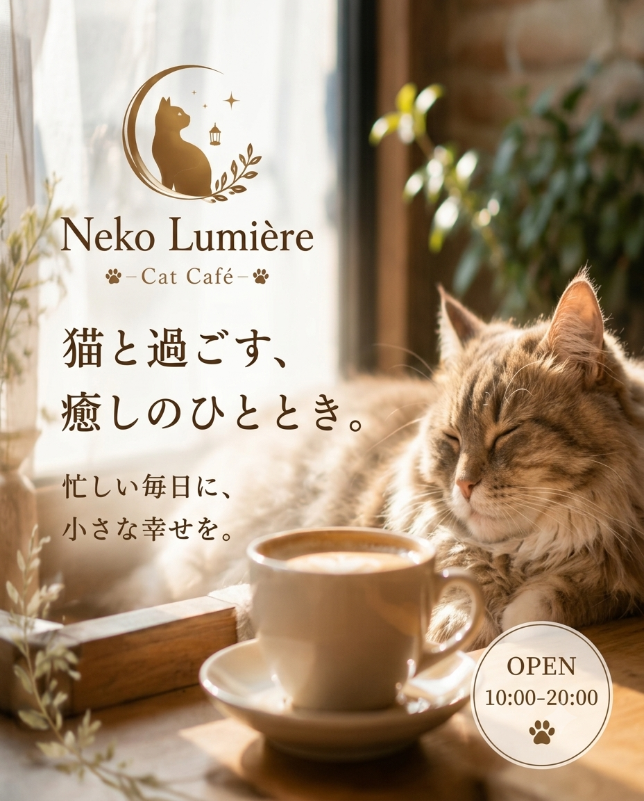
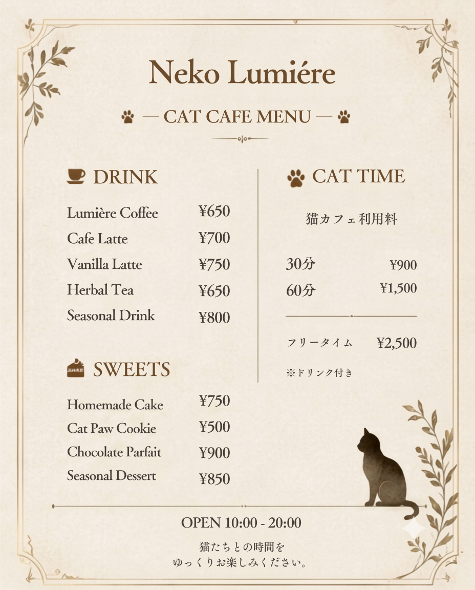
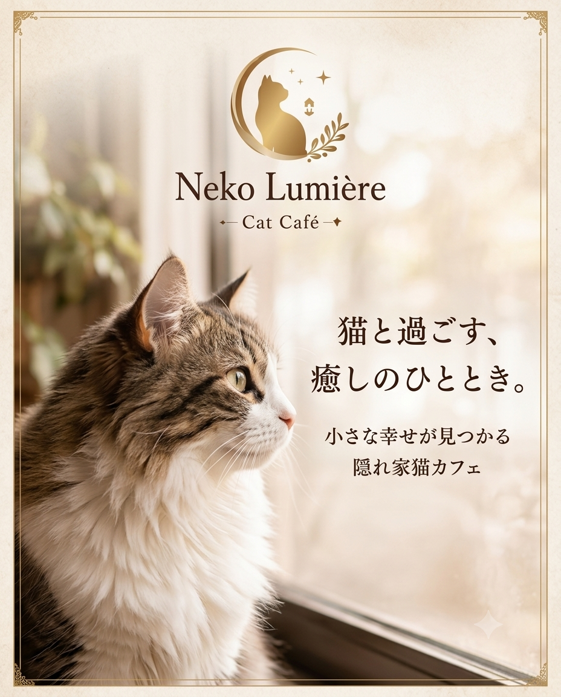
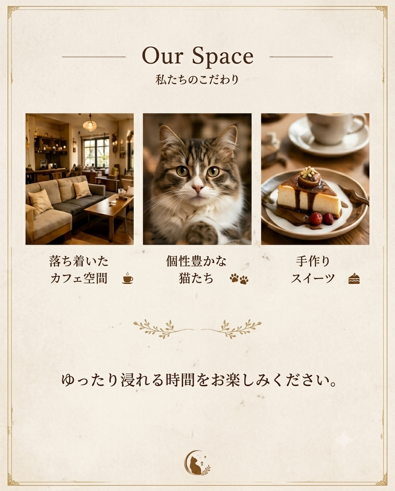
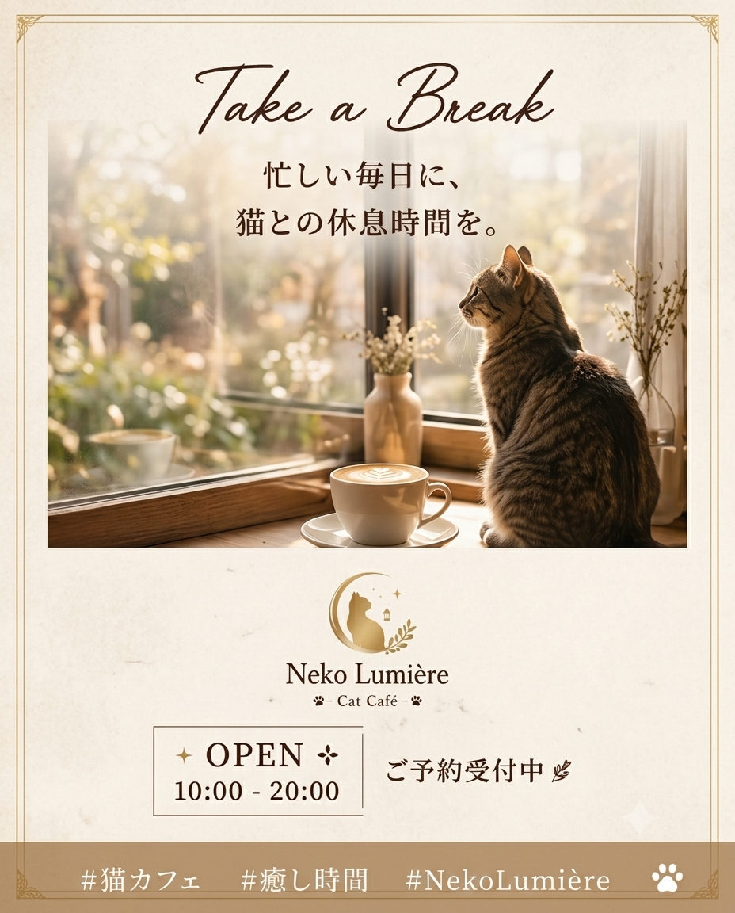

制作概要
猫との癒やしの時間を提供する架空の猫カフェ「Lumière」を想定し、 店舗ロゴ、バナー、メニュー表、Instagram投稿のデザインを制作しました。 媒体ごとの役割を意識しながら、統一感のあるブランドイメージを表現しました。
店舗ロゴ
店舗バナー

メニュー表

Instagram投稿



制作目的
猫カフェの店舗イメージを視覚的に伝え、 「落ち着いた空間で猫と過ごせる」というブランドイメージを 表現することを目的として制作しました。
工夫したポイント
- 店舗ロゴからInstagram投稿まで、デザインの統一感を意識しました。
- 猫カフェらしい親しみやすさと、落ち着いた雰囲気の両立を意識しました。
- 媒体ごとに情報量やレイアウトを調整し、見やすさを意識しました。
- Instagramでは、スマートフォンで見たときにも内容が伝わりやすい構成を意識しました。
使用ツール
- Canva
制作物
- 店舗ロゴ
- 店舗バナー
- メニュー表
- Instagram投稿 3枚